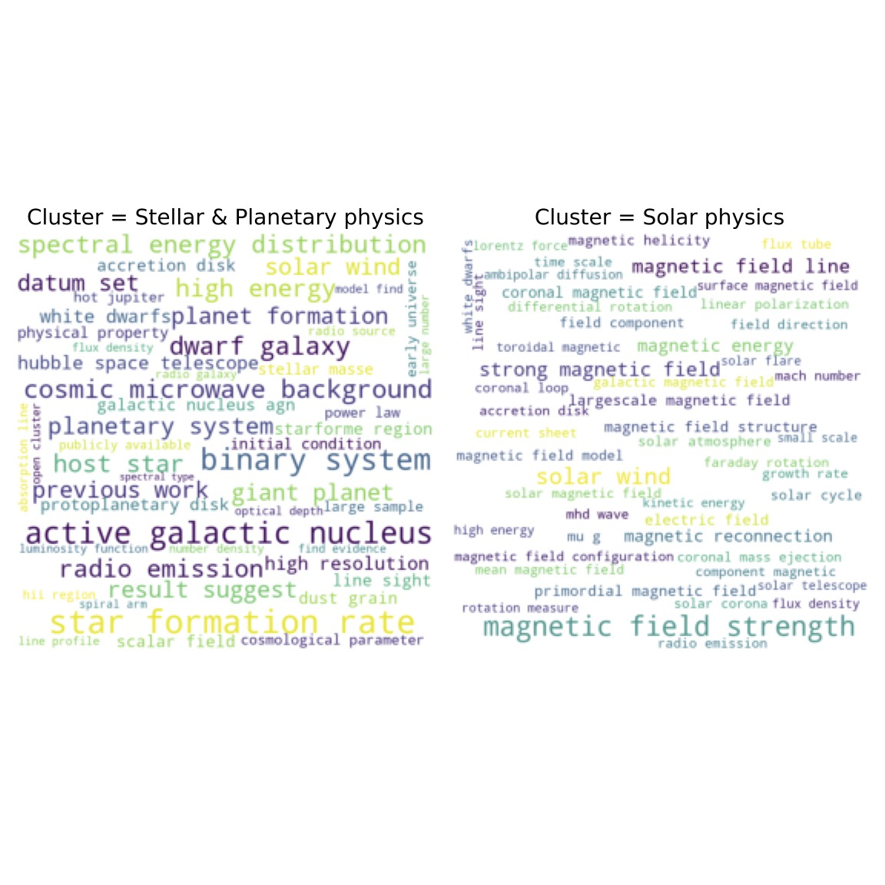
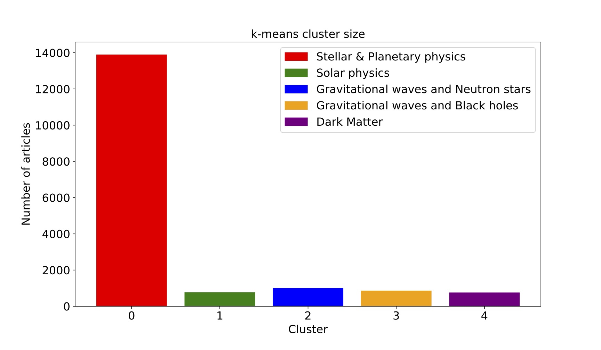
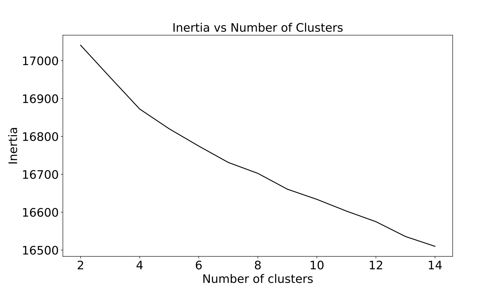
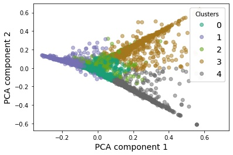
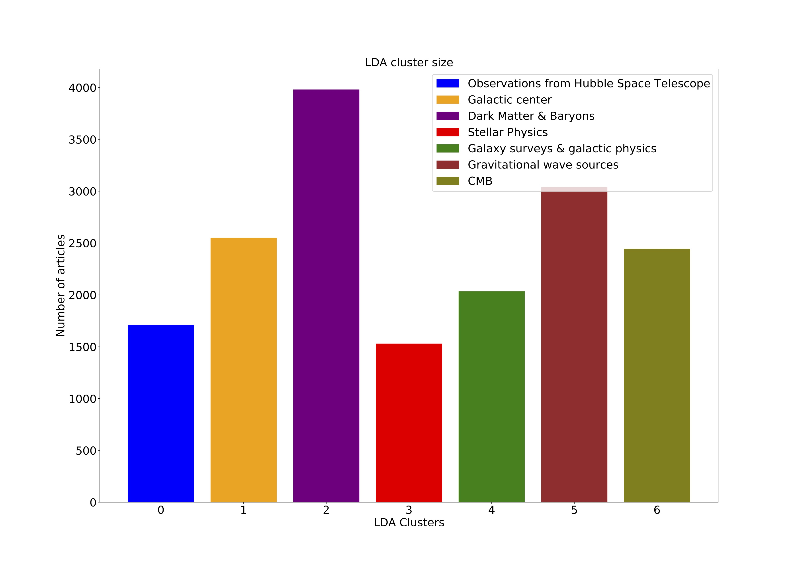
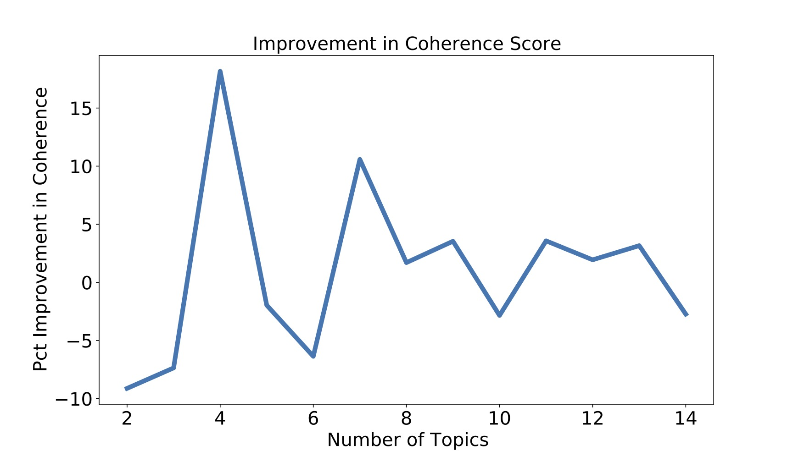

About
This project is geared towards young researchers such as undergraduates motivated to pursue graduate school. Undergraduate research experience is a major factor in graduate admissions. However, as a beginner, it is extremely challenging for an undergrad to identify the broad research topics and the fastest growing areas in any field he/she is interested in. Moreover, simply going through publication databases isn't a viable solution: every year thousands of papers are published in every research area in physics!
This project attempts to answer some of these problems. I have identified and compared the buzzwords of two different years which gives us an indication of the rising trends in physics. Using topic modelling, I have identified broad research topics as well as sub-topics contained in them. An interested reader can not only get a clear view of the research landscape in any broad are in physics but also find out some of the specific questions that belong to any field.
Visit my GitHub repository to understand the machine learning techniques implemented in this project.
Exploratory Data Analysis
Rising Trends in Physics
Using the arXiv database for physics, I have compared the buzzwords in all areas of physics between two different years, 2010 (on the left) and 2020 (on the right). To create this comparison, I analyzed ~7400 publication titles from 2010 and ~17,000 from 2020. We can see some emerging trends such as 'neural networks' and 'machine learning' as well as some topics that have stayed both stable and prolific over the years such as 'optics'. This is an indication that machine learning is gaining popularity in physics and is a very useful skill to possess. Notice that COVID was also talked about frequently by physicists in 2020. 'Neural Network' can be seen as an emerging technique in 2020, unheard of ten years ago.
In 2010, the top 10 most used words were:
'dynamic',
'quantum',
'network',
'optical',
'plasma',
'theory',
'state',
'simulation',
'electron',
'particle'
In 2020, the top 10 most used words are:
'dynamic',
'quantum',
'network',
'optical',
'simulation',
'flow',
'COVID',
'state',
'Modeling',
'Neural Network'
Most popular fields in Physics
A bar chart provided below compares the most active fields within physics between 2010 and 2020. The numbers on the X-axis are the publication count. Comparing the 2010 and 2020 research trends, we see that the field of 'Optics' stayed the most active in a decade. In contrast, 'Applied Physics' has become more active recently whereas 'Physics and Society' has become less popular since 2010.
Also notice that even in a given field, for example Optics, the total number of publications has grown almost by a factor of three. Physics as an entire discipline is growing with every decade, more papers being published every year.
Rising trends: a closer look
We can also look at the change in popularity of some key words/phrases over the years. Plotted below are the frequency vs. year (on the left in blue) and percentage increase from the previous year vs. year (on the right in red) of two phrases, such as 'Neural Network' (top panel) and 'Black Hole' (bottom panel) for example. Neural networks has seen a steady increase in popularity over the years, especially in the year 2017. Black holes, on the other hand, gained popularity between 2015 and 2017 which could be due to the discovery of binary black hole mergers by LIGO in 2015.

Concluding Remarks
So far we looked at some Exploratory Data Analysis results.- We identified some new techniques such as 'Neural Networks' that are gaining traction in physics. For a motivated undergrad, having some experience in such techniques could play a vital role in graduate admissions decisions.
- One could also analyze the change in popularity of certain terms over the years. For instance, 'Black Holes' suddenly started to trend in 2015. Identifying such suddenly rising trends could point to some groundbreaking discoveries/publications worth being aware about.
- Finally, one could examine which are the most stable fields over the years, perhaps indicating that the field is vibrant and full of mysteries.
Topic modeling
For topic identification, I implemented unsupervised machine learning algorithms such as k-means clustering and the Latent Dirichlet Allocation or LDA. In k-means clustering, each document is viewed as a multi-dimensional vector of the matrix. Two documents are similar to one another if their corresponding vectors are close to one another or, in other words, if the difference of their vectors is small in length. We can use this common clustering method to group our documents together to find topics of research in Astophysics (astro-ph).
In LDA, each word in a document is assigned a topic. Initially, this assignment is done randomly. To improve upon the assignment of topics to each word, we look at the probability of a word, w, belonging to a particular topic, t. This is calculated by making a subsample of all documents that are classified as a particular topic t and the number of documents in that subsample that contains the word w. The LDA then goes through each document in the corpus and calculates the probability that a topic t is contained in a document d. These two probabilities assign a new probability to every word in the document of belonging to a topic. Repeating this process many times gives us an equilibrium value of the probabilities associated with each word and document.
Let us first begin with the simplest clustering algorithm, the k-means. After cleaning up the data, the k-means clusters can be labelled as:
| k-means clustering |
|---|
| Stellar & Planetary physics |
| Solar physics |
| Gravitational waves and Neutron stars |
| Gravitational waves and Black holes |
| Dark Matter |
Visualizations
Let's look at a few visualizations from the clustering algorithms to get more insights from the data.
Word Cloud
First let's take a look at the most frequent words in a couple of the clusters through wordclouds. This will help us label the 5 clusters.
The two wordclouds above belong to the clusters from the k-means algorithm. Similar wordclouds can be made for all the other clusters for both algorithms. More details have been provided in the Python notebook in GitHub.
Cluster size
We see that in the k-means approach, Stellar & Planetary physics is the largest cluster. This seems to be consistent with my personal experience of going through the arXiv database in the past few years.
Word Frequencies
Next, we can look at the number of occurences in each cluster of some of the most frequent words in the corpus. This visualization could suggest some additional stop words that we might want to add (and then reprocess the resulting new bag of words matrix) to make our clustering better.


Number of Clusters
To verify that 5 is a reasonable assumption of the number of clusters, let's look at the inertia plot. The inertia value on the y-axis is related to the average distance between the cluster center and the data points. The lower the inertia the better the number of clusters.
One can notice that the inertia marginally tapers at 4. The improvements in inertia become a little gradual beyond that value. Therfore, 5 is a good choice for the number of clusters.
Low-dimensional representation
We can use PCA to project the high-dimensional vector representation of our text corpus into a lower-dimensional space. This could give us an indication of the separation or overlapping between the clusters.
We see that some clusters, eg. Cluster 3 (brown) and 4 (gray) are relatively well-defined: most of the documents belonging to these clusters lie along one axis. There is some mixing in the other clusters, e.g. Clusters 0 (blue) and 2 (green), possibly because of the limitation of the projection down into a two-dimensional space. Alternatively, this could also mean that there is overlap between the clusters. There is reason that this might be true because neutron stars are the end state of many stars. Therefore Cluster 0 (Stellar & Planetary physics) and Cluster 2 (Gravitational Waves and Neutron stars) are related.
Latent Dirichlet Allocation or LDA
One way to improve on our current clustering method is to predict the probability with which a document is assigned a cluster. LDA is one such algorithm which does that. After pre-processing the data and implementing the LDA algorithm from the gensim library, I arrived at the following topics:
| LDA topics |
|---|
| Observations from Hubble Space Telescope |
| Galactic center |
| Dark Matter & Baryons |
| Stellar Physics |
| Galaxy surveys & galactic physics |
| Gravitational wave sources |
| Cosmic Microwave Background or CMB |
We will see in a moment why 7 is the appropriate number of clusters for LDA.
Cluster Size
For the LDA, the cluster/topic sizes were: Word Frequencies

Number of Topics: Coherence Score
The coherence score captures the semantic information of the document by looking at the co-occurence of pairs of words in the document. It can take a value between -1 (worst) and 1 (best). I calculated the coherence scores for different number of topics. I then plotted the percentage improvement in the coherence score with increasing number of topics:
The biggest improvement in coherence score, 15%, occurs when the number of topics increases to four. However, from my experience, it seems like a low number. The next biggest improvement occurs when there are 7 topics. Therefore, the initial assumption of 7 topics turns out to be reasonable.
Example
Finally, let us take a look at an abstract/document from the database/corpus and compare the topics it was assigned to by the two different methods.
We present an upgrade of the OGLE Collection of RR Lyrae stars in the Galactic bulge and disk. The size of our sample has been doubled and reached 78 350 RR Lyr variables, of which 56 508 are fundamental-mode pulsators (RRab stars), 21 321 pulsate solely in the first-overtone (RRc stars), 458 are classical double-mode pulsators (RRd stars), and 63 are anomalous RRd variables (including five triple-mode pulsators). For all the newly identified RR Lyr stars, we publish time-series photometry obtained during the OGLE Galaxy Variability Survey. We present the spatial distribution of RR Lyr stars on the sky, provide a list of globular clusters hosting RR Lyr variables, and discuss the Petersen diagram for multimode pulsators. We find new RRd stars belonging to a compact group in the Petersen diagram (with period ratios P_1O/P_F = 0.74 and fundamental-mode periods P_F = 0.44 d) and we show that their spatial distribution is roughly spherically symmetrical around the Milky Way center.
The k-means clustering method assigns the document to the Stellar & Planetary physics cluster. This is a fair result given that the abstract contains the term 'stars'.
The one shortcoming of the k-means clustering method is that it strictly categorizes the documents. LDA is advantageous since it gives us the probabilities of the topics for each document. For the above abstract, the 2 top-most topics are Galactic center with probability of 0.75 and Stellar Physics with probability of 0.08.
Concluding Remarks
- We saw that in a broad field such as Astrophysics, there are some distinct sub topics for example: stellar and planetary physics, gravitational waves, dark matter and cosmic microwave background.
- For the k-means clustering, 5 is an appropriate number of clusters. For LDA, which takes into account the semantic structure of the text, the appropriate number of topics is 7.
- We can also look at the multidisciplinary nature of the articles through LDA.